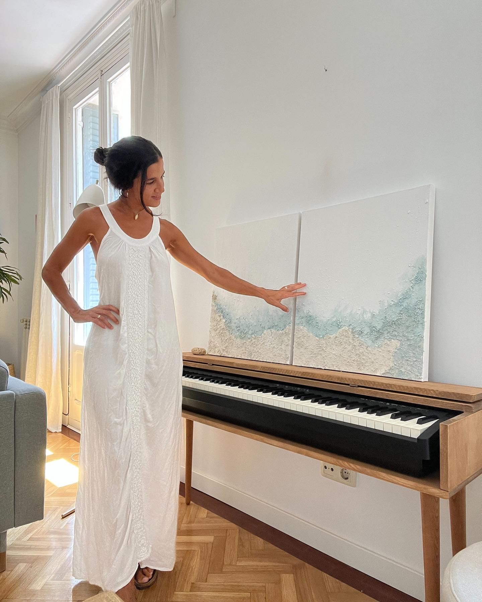
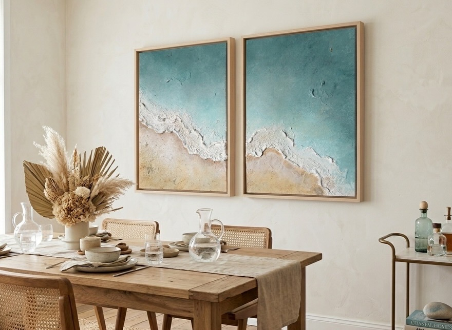

La Artista
Déjate llevar
por las Texturas
Quién soy
Hola, soy Inés Barros
Soy artista visual especializada en arte abstracto y texturas en Madrid y Barcelona. Trabajo con acrílico y minerales naturales para crear obras que transmiten calma, movimiento y emoción.
Imparto talleres creativos para particulares y empresas desde hace varios años, y he trabajado con equipos de todos los tamaños que buscan experiencias diferentes. Mi misión es simple: ayudarte a descubrir que el arte no depende de la técnica, sino de la valentía de crear.
"El arte empieza cuando lo intentas"

Mi trabajo
Arte abstracto inspirado
en la naturaleza
Cada obra nace de la observación del mar, la arena, la luz mediterránea y los elementos naturales. Uso minerales, gesso y acrílico para crear texturas que invitan a tocar y a sentir.

Materiales
Texturas que
se sienten
Trabajo principalmente con acrílico, gesso, minerales naturales y espátula. Cada capa añade profundidad y cada textura cuenta una historia diferente.
- ✔️ Acrílico y minerales naturales
- ✔️ Gesso y pasta de modelar
- ✔️ Técnica de espátula y texturizado
- ✔️ Lienzo de alta calidad
¿Conectamos?
Sígueme en Instagram
Comparto el proceso creativo, obras nuevas y momentos de los talleres.
@inesbarros.art